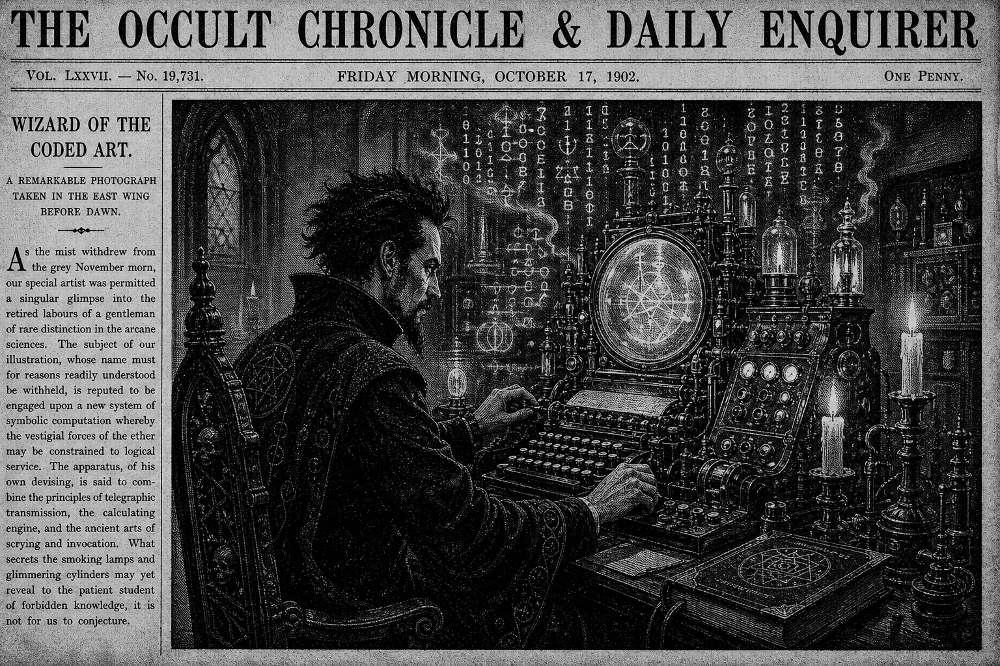

Morning Edition
6:00 AM CDTFinance & Markets
Jobs Print Holds the Friday Spell
Wall Street wakes to the July employment report at 8:30 a.m. ET. CNBC's preview has economists looking for roughly 83,000 payrolls and an unemployment rate still near 4.2% after June's soft +57,000 print. The deeper read is participation and wages: Fed voices are watching inflation closely enough that some still float a hike path if price pressure refuses to cool.
Source: CNBC July jobs preview, August 6, 2026Apollo Lands easyJet for £5.7bn
EasyJet agreed a £5.7 billion takeover by Apollo Global Management at £7.15 a share after rival Castlelake walked away. The Guardian notes founder Stelios Haji-Ioannou's family keeps a stake, an EU Trust structure is meant to honor ownership rules, and completion is targeted by the end of March 2027. Private equity still loves a clean brand with operating leverage.
Source: The Guardian easyJet/Apollo report, August 6, 2026Oil and Risk Trade Reconnect
Crypto desks and equity desks are reading the same macro packet this morning: Brent has climbed back above $83 as Middle East tension reheats, while bitcoin sits near the mid-$64Ks ahead of payrolls. Inflation worry is the shared daemon again — energy up, risk assets cautious, and Friday's data as the next interrupt.
Source: CoinDesk market live updates, August 7, 2026World & US
Birthright Orders Return to the Stack
BBC reports Trump signed fresh executive orders aiming to curb birth tourism and further limit who qualifies for U.S. birthright citizenship. Legal challenge is the obvious next process; the morning political compile is another round of contested constitutional diffs landing on the federal docket.
Source: BBC birthright citizenship report, August 7, 2026Meta Hit with Record Child-Safety Fine
BBC says Meta was fined $567 million in the largest child-safety ruling against the social giant, on top of $375 million already ordered in the case, for a combined $942 million. Platform liability keeps compiling as a first-class regulatory feature, not a side quest.
Source: BBC Meta fine report, August 7, 2026Heatwave Holds Rome After Dark
AP's overnight dispatch from Italy finds Rome still near 30°C in the evening during the country's fourth heatwave of the season, with national health alerts and tourists queueing at fountains and water stations near the Colosseum. Climate stress remains the slow-burn background process under every other headline.
Source: Associated Press Italy heat coverage, August 6–7, 2026
The Friday Scrying Lens: a code-mage steadies the terminal while jobs data, orbital dust tests, and agent runes flicker across the glass.
"Friday's magic is finishing clean: close one true loop, leave a note the future you can trust, and refuse to ship chaos into the weekend."- The Developer's Almanac
Sagittarius Horoscope
Justin, today's Sagittarius weather is thoughtful and creative rather than frantic: a philosophical turn that still wants real career recognition if you aim your ideas with care. Economic Times flags breakthrough energy and financial openings when strategy stays sharp; Yahoo's daily chart says lean into what matters instead of drowning in noise. Rat-year note: adaptability wins when you leave slack in the schedule and choose one high-leverage experiment over ten half-open tabs. Developer translation: name the hypothesis, ship the smallest proof before lunch, and let curiosity be a controlled feature flag. Lucky hex: #7c3aed. Lucky command: git log --oneline -5.
Tech, AI, Space & Crypto
-
OpenAI Opens the Gates for Free Chats
OpenAI is improving GPT-5.6 Sol for Plus/Pro users with more focused answers, better factual reliability, and a thought-effort slider, while Free users get GPT-5.6 Luna as default plus unlimited text chats and a Think button for harder questions. Access is becoming the product story again.
Source: OpenAI GPT-5.6 Sol/Luna update, August 6, 2026 -
Bitcoin Holds the $64K Ward
CoinDesk has bitcoin flat near $64,300–$65,000 into the jobs report, with oil back as a headwind after Middle East escalation. Elsewhere on the tape: whales and ETFs are still accumulating, Wintermute won SEC broker-dealer status, and the Clarity Act vote slips past the Senate's summer window.
Source: CoinDesk bitcoin live updates, August 7, 2026 -
Artemis Hardware Fights Moon Dust
NASA's Lunar Development and Test Facility at Johnson Space Center is putting Artemis hardware through lunar-dust trials — sharp, abrasive, clingy regolith that can grind seals, optics, and joints. Before the Moon gets astronauts, the environment gets a hostile QA suite.
Source: NASA Artemis dust-test feature, August 7, 2026 -
Coldcard Aftershocks Move Onchain
CoinDesk reports roughly 200,000–210,000 bitcoin leaving older long-term wallets in the wake of Coldcard-related security fallout, read more as custody reshuffling than classic dump pressure. In crypto, trust failures migrate balance sheets before they migrate headlines.
Source: CoinDesk Coldcard onchain report, August 7, 2026 -
Friday Build Note
Best engineering move before the weekend: finish one real loop, write the handoff, archive the context, and leave Monday a clean checkout instead of a mystery branch.
Source: The Daily Code desk, August 7, 2026
Morning Compile
- Close Friday with intention: one shippable win, one clear note, one lighter queue.
- When the macro noise spikes, trust the local magic — verify the branch, run the check, protect the weekend.